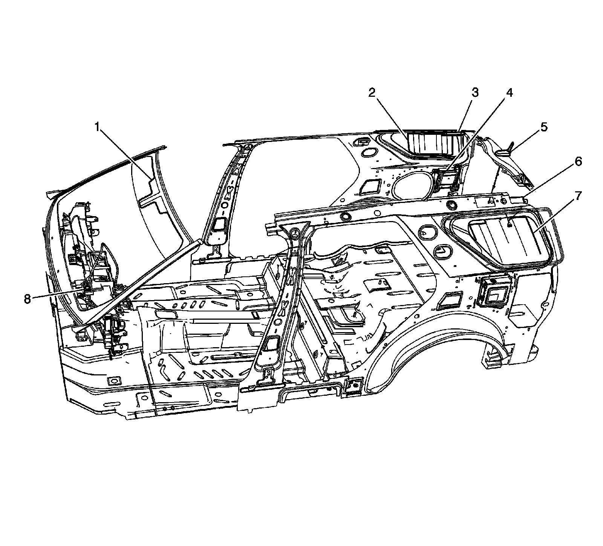
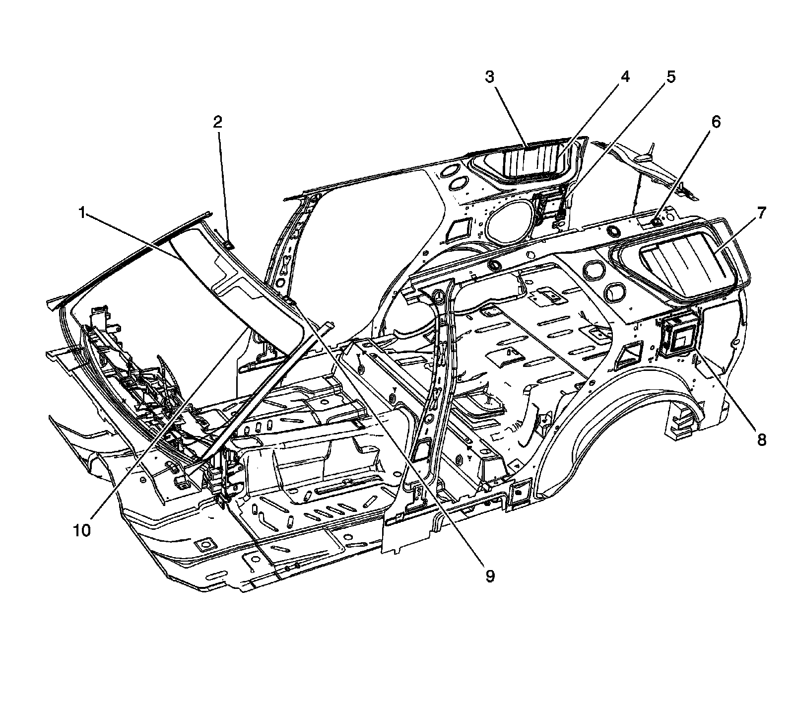

Antenna Control Module: Locations
Luggage Compartment/Rear of Vehicle Component Views
Antenna Components - Domestic

1 - Front Windshield Antenna
2 - Rear Window Antenna Assembly - Right
3 - Rear Window Antenna Module - Right
4 - Digital Radio Receiver (U2K)
5 - Digital Radio/Cellular Telephone Antenna (U2K/UE1)
6 - Rear Window Antenna Module - Left
7 - Rear Window Antenna Assembly - Left
8 - GPS Antenna (UE1)
Antenna Components - Export

1 - Antenna - Right Front
2 - Antenna Amplifier 2
3 - Antenna Amplifier 3
4 - Antenna - Right Rear
5 - Digital Radio Receiver (U2K)
6 - Antenna Amplifier 4
7 - Antenna - Left Rear
8 - TV Tuner Module (U2Y/U2X)
9 - Antenna Amplifier 1
10 - Antenna - Left Front